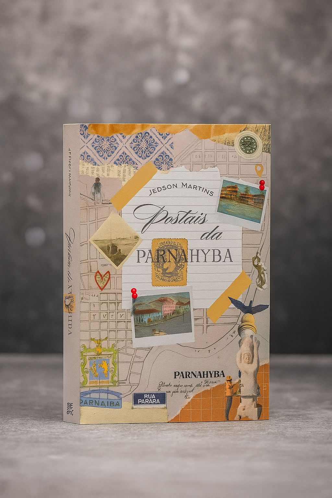
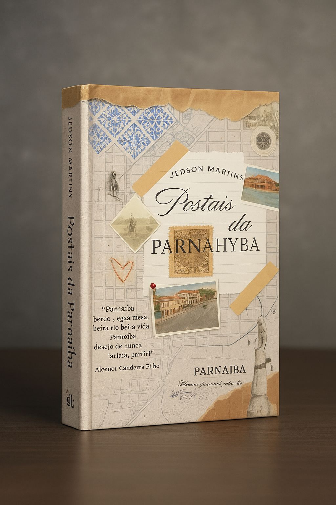

História da cidade
Uma leitura visual que aproxima o leitor dos processos históricos e urbanos de Parnaíba.


Edição especial
Um livro para revisitar a cidade por meio de fotografias raras, memórias afetivas e registros históricos.
A obra reúne pesquisa, sensibilidade e patrimônio visual em uma edição pensada para leitores, pesquisadores e admiradores da história de Parnaíba.
Postais da Parnaíba nasce de uma pesquisa histórica minuciosa, construída a partir de mais de 700 fotografias antigas, mapas, pinturas e cartões-postais reunidos em diferentes acervos institucionais e pessoais.
Ao longo das páginas, o leitor encontra uma narrativa visual que conecta arquitetura, paisagem, vida cotidiana e memória social. O resultado é uma obra que apresenta a cidade com profundidade histórica e forte apelo afetivo.
Além de documentar transformações urbanas, o livro convida à contemplação e à redescoberta de lugares marcantes para quem vive, pesquisa ou admira Parnaíba.
Uma leitura visual que aproxima o leitor dos processos históricos e urbanos de Parnaíba.
Imagens selecionadas com valor documental e forte potência narrativa.
Pesquisa autoral organizada com cuidado editorial e sensibilidade histórica.
Uma obra pensada para consulta, contemplação e preservação da memória local.

Uma publicação pensada para quem valoriza memória, patrimônio e a beleza histórica de Parnaíba.